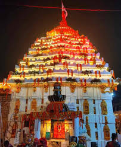
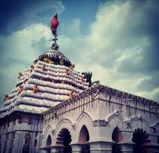

Akhandalamaniu temple


Akhandalamaniu temple
Akhandalamani Temple (pronounced [akʰɔɳɖɔlɔmɔɳi]) at Aradi village, Odisha, India, is dedicated to Lord Shiva (Baba Akhandalamani). Aradi is about 37 kilometres (23 mi) away from Bhadrak. The present fifty-foot cement and concrete temple structure replaced a wooden temple some time between 1830 and 1840 AD.\
Location and transportation
This famous temple, the abode of “Lord Siva” is located in the bank of river Baitarani, at Aradi,[1] 37 kilometres (23 mi) to the east of the district headquarters of Bhadrak via Asurali, Kothara and Dhusuri. This place is also linked to Chandabali by boat through the river Baitarani. From Chandabali ferry ghat to Aradi will take hardly two hours by boat. The temple is just 18 km away from the famous Kali mandir of Rameswarpur village
Legend/History
There is no conclusive history available either regarding Baba Akhandalamani or the temple of the lord Siva. According to legend, around 350 years ago during the rule of Raja Sri Niladri Samara Singha Mohapatra, one early morning the Raja sent a peasant to cultivate his paddy field on the bank of the river Baitarani. While cultivating, the blade of his plough was broken by hitting with some hard material. The peasant was astonished and found a black glazed granite stone full of blood flowing toward the river Baitarani. The peasant ran to call King Niladrisamar Singh and he hurriedly came to the spot, finding a flood of milk in place of blood and a huge black cobra hooding the stone.
That night the king had a dream regarding the arrival of the God Akhandalamani on that place. This news spread like wild fire in the locality. The next day King Niladri Samara Singha Mohapatra started worshiping the great god and immediately built a wooden temple on the spot. A large number of devotees from different villages started visiting and worshiping the great God. The king invited five Brahmins from a village named Naharagrama of Jajapur district to perform seva-puja (worshiping and taking care) of lord Akhandalamani.
The present main temple of Aradi was built by the King of Konika Shri Harihara Bhanja and his chief queen Satyabhama Patadei. The height of the temple is around 150 ft. All the stones used in this temple were brought from the historic hill of Lalitgiri near Chandikhol.
Temple
The main hall was built by a sage named Shri Narasingha Pratap Kumar and the surrounding wall of the temple was built by a noted sage named Shri Darshan Sekhara Das. Later, today's Bhoga Mandapa near the temple (along with the present temple office) was built by government initiative. The P.W.D road from Bhadrak to Aradi was declared State Highway and was converted into all-weather road instead of fair-weather road. A Pantha Nivas was built at Aradi by Tourism Dept., Govt. of Odisha. The Govt. of Odisha sanctioned a handsome amount for the temple.[2] There was one reported incidence of theft and burglary at the temple.
Festivals
There are many fairs and festivals observed at the temple of Baba Akhandalamani like Mahasibaratri which is locally called Jagara mela. On this day, pilgrims and devotees inside and outside the state assembl and worship Akhandalamani at Aradi.[4] Bol bam devotees come to Aradi in large number from different areas in the month of Sravana to worship the God and pour holy water over the Shiva Linga. The Bol bam devotees carry holy water from different rivers of India like Ganges, Baitarani, Mahanadi, Salandi, Peta etc. with a bamboo lever.
Controversy
In January 2009, the women and child development minister of Odisha was objected by the sevayats for desecrating the temple since she comes from a lower caste.